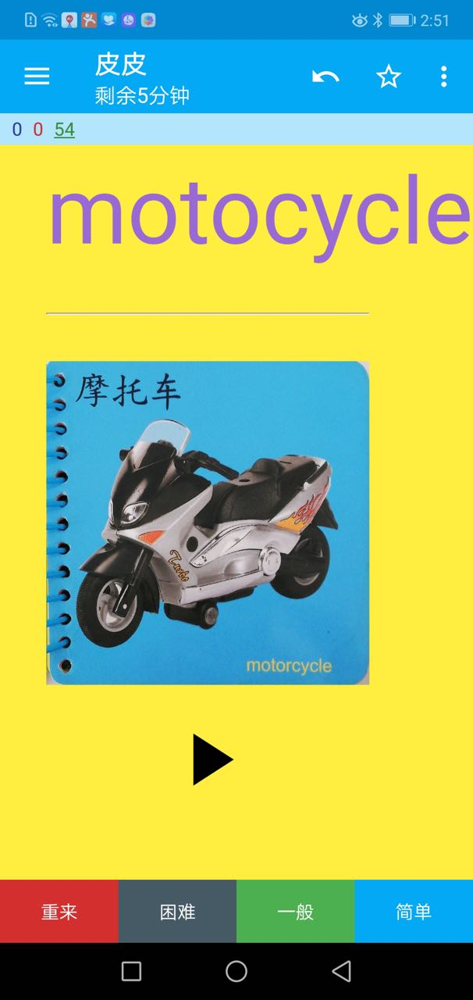
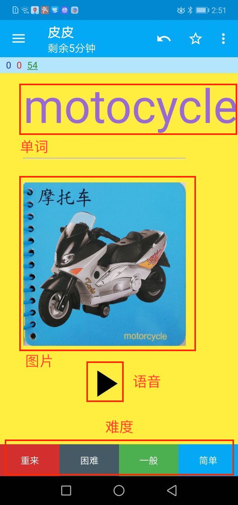

记录如何制作 Anki 卡片来教幼儿认字。
皮皮3岁4个月，上幼儿园小班，最近特别喜欢认汉字。
于是在京东上买了很多纸质的卡片回来写上一些他感兴趣的字。他乐此不疲，一百张卡片很快就写玩了。
纸质卡片有几个问题：
- 一百张就很大一摞，屋子里丢得到处都是
- 太单调，没图没声音
- 有些字认得快，有些认得慢，不好控制每个卡片出现的频率
所以尝试制作 Anki 卡片。这是卡片效果。

具体怎么操作呢？
制作卡片
制作 Anki 卡片用到这几个工具：
- Anki - Anki 是一个记忆软件，支持 PC/Mac/Android/iOS，除 iOS 版本收费外其他均免费
- guetzli - 用于图片压缩
- Google 照片扫描仪 - 扫描书本上的图片
- 腾讯文档 - 用作图床
- 百度tts接口 - 用作文本转换语音
制作 Anki 卡片的步骤如下：
- 首先找到感兴趣的字或单词
- 找到字或单词对应的图片
- 如果图片是书上的，使用 Google 照片扫描仪扫描到手机，然后拷贝到电脑
- 如果图片是网络上的，直接下载到电脑本地
- 通过百度tts接口将字或单词转换到语音文件，下载到电脑本地
- 打开 Anki，选择
Basic类型的卡片 - 输出字或单词，以及对应的图片和语音文件
搞定！现在拿出手机或电脑就可以看 Anki 卡片了。

图中是一张制作完成的卡片，从上到下依次是：
- 单词 - 尽量选一些感兴趣或是简单的
- 图片 - 跟单词相关的卡通图片
- 语音 - 单词发音
- 难度 - 对于已经记住的，直接点简单；记不住的，点重来
Anki 卡片的优点是：
- 记忆内容可量身定制，汉字、单词、图片、电话号码、公交线路…，只要他感兴趣即可，兴趣比什么都重要
- 一部手机就可以看卡片了，而且多终端同步。担心影响视力的话可以电脑或手机投屏到电视机
- Anki 会帮你控制卡片出现频率，认得慢的可以多记
- 有图片，有语音
它的缺点是：
- 制作一张好的卡片还是很费时间的
- Anki 的界面很丑
- 小孩子对手机或电脑的兴趣有时大过卡片本身，容易分心
常见问题
当然，使用过程中遇到一些问题。这里总结了一下解决方法。
卡片同步
官方的同步服务器速度比较慢，你可以自己搭建 Anki 服务器加快同步速度。整个过程比较折腾，慎重。
注意，iOS 版本的 Anki 不能配置自己的 Anki 服务器。( 价格 100 多元，我买来发现不能配置立马后悔，不过就当对 Anki 的支持吧)
卡片太大
制作卡片时直接将图片文件拷贝到卡片中很省事，但这样做会导致卡片太大，各终端之间同步卡片速度很慢。
一个方法是使用 guetzli 对图片进行压缩。不过我在 win 10 上 guetzli 压缩速度极慢。
一个终极解决方法是先将图片上传到腾讯文档(随便建一个 word 文件，然后上传图片到这个文件)，从文档中拷贝出图片地址。制作卡片时不要直接拷贝图片而是通过 html 代码引用图片地址：
1 | <img src=http://image.url> |
(将图片先压缩再上传到腾讯文档可能效果更好，一是保证卡片小易同步，二是使用卡片时图片加载速度快)
拍照
有些图片来自幼儿书，直接对着书拍照效果通常不好，所以还是使用 Google 照片扫描仪吧。自从用上这个工具，即便你手抖眼歪，也能扫出方方正正的照片。
语音
百度查单词后可以发音，其原理是使用通过后台接口生成一个 tts.mp3 文件。Chrome 浏览器中很容易找到这个文件并下载下来。
我写了一个批量转语音的 Python 脚本，见这里
Anki 使用技巧
- Monokai程序员风格之随机选择题模板 - 这个模板不错，可以用来在 Anki 中添加选择题